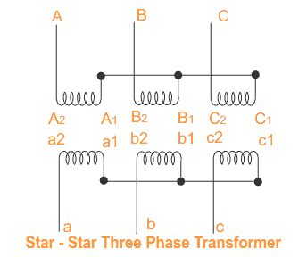
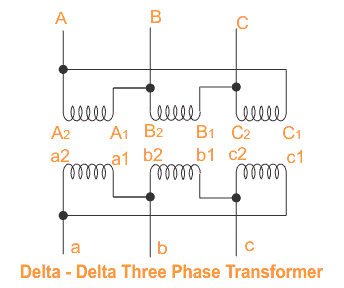
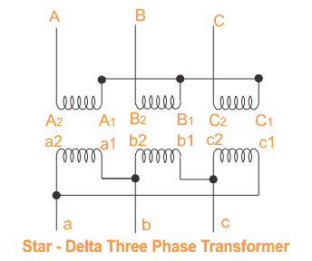
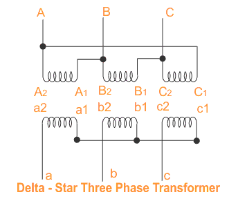

Single Three Phase Transformer vs bank of three Single Phase Transformers
Connection of Three Phase Transformer
Marking or Labeling of Terminals
Star-Star Transformer
Delta-Delta Transformer
Star-Delta Transformer
Delta-Star Transformer
Delta-Zigzag Transformer
Star-Zigzag Transformer
Choice Between Star Connection and Delta Connection
Comparison between Single Three Phase and Bank of Three Single Phase Transformers for Three Phase System
It is found that generation, transmission and distribution of electrical power are more economical in three phase system than single phase system. For three phase system three single phase transformers are required. Three phase transformation can be done in two ways, by using single three phase transformer or by using a bank of three single phase transformers. Both are having some advantages over other. Single 3 phase transformer costs around 15% less than bank of three single phase transformers. Again former occupies less space than later. For very big transformer, it is impossible to transport large three phase transformer to the site and it is easier to transport three single phase transformers which is erected separately to form a three phase unit. Another advantage of using bank of three single phase transformers is that, if one unit of the bank becomes out of order, then the bank can be run as open delta.
Connection of Three Phase Transformer
A verity of connection of three phase transformer are possible on each side of both a single 3 phase transformer or a bank of three single phase transformers.
Marking or Labeling the Different Terminals of Transformer
Terminals of each phase of HV side should be labeled as capital letters, A, B, C, and those of LV side should be labeled as small letters, a, b, c. Terminal polarities are indicated by suffixes 1 & 2. Suffix 1’s indicate similar polarity ends and so do 2’s.
Star-Star Transformer

Star-star transformer is formed in a 3 phase transformer by connecting one terminal of each phase of individual side, together. The common terminal is indicated by suffix 1 in the figure below. If terminal with suffix 1 in both primary and secondary are used as common terminal, voltages of primary and secondary are in same phase. That is why this connection is called zero degree connection or 0° - connection.
If the terminals with suffix 1 is connected together in HV side as common point and the terminals with suffix 2 in LV side are connected together as common point, the voltages in primary and secondary will be in opposite phase. Hence, star-star transformer connection is called 180°-connection, of three phase transformer.
Delta-Delta Transformer
In delta-delta transformer, 1 suffixed terminals of each phase primary winding will be connected with 2 suffixed terminal of next phase primary winding.

If primary is HV side, then A1 will be connected to B2, B1 will be connected to C2 and C1 will be connected to A2. Similarly in LV side 1 suffixed terminals of each phase winding will be connected with 2 suffixed terminals of next phase winding. That means, a1 will be connected to b2, b1 will be connected to c2 and c1 will be connected to a2. If transformer leads are taken out from primary and secondary 2 suffixed terminals of the winding, then there will be no phase difference between similar line voltages in primary and secondary. This delta delta transformer connection is zero degree connection or 0°-connection.
But in LV side of transformer, if, a2 is connected to b1, b2 is connected to c1 and c2 is connected to a1. The secondary leads of transformer are taken out from 2 suffixed terminals of LV windings, and then similar line voltages in primary and secondary will be in phase opposition. This connection is called 180°-connection, of three phase transformer.
Star-Delta Transformer
Here in star-delta transformer, star connection in HV side is formed by connecting all the 1 suffixed terminals together as common point and transformer primary leads are taken out from 2 suffixed terminals of primary windings.

The delta connection in LV side is formed by connecting 1 suffixed terminals of each phase LV winding with 2 suffixed terminal of next phase LV winding. More clearly, a1 is connected to b2, b1 is connected to c2 and c1 is connected to a2. The secondary (here it considered as LV) leads are taken out from 2 suffixed ends of the secondary windings of transformer. The transformer connection diagram is shown in the figure beside. It is seen from the figure that the sum of the voltages in delta side is zero. This is a must as otherwise closed delta would mean a short circuit. It is also observed from the phasor diagram that, phase to neutral voltage (equivalent star basis) on the delta side lags by − 30° to the phase to neutral voltage on the star side; this is also the phase relationship between the respective line to line voltages. This star delta transformer connection is therefore known as − 30°-connection.
Star-delta + 30°-connection is also possible by connecting secondary terminals in following sequence. a2 is connected to b1, b2 is connected to c1 and c2 is connected to a1. The secondary leads of transformer are taken out from 2 suffixed terminals of LV windings,

Delta-Star Transformer
Delta-star transformer connection of three phase transformer is similar to star – delta connection. If any one interchanges HV side and LV side of star-delta transformer in diagram, it simply becomes delta – star connected 3 phase transformer. That means all small letters of star-delta connection should be replaced by capital letters and all small letters by capital in delta-star transformer connection.
Delta-Zigzag Transformer
The winding of each phase on the star connected side is divided into two equal halves in delta zig zag transformer. Each leg of the core of transformer is wound by half winding from two different secondary phases in addition to its primary winding.
Star-Zigzag Transformer
The winding of each phase on the secondary star in a star-zigzag transformer is divided into two equal halves. Each leg of the core of transformer is wound by half winding from two different secondary phases in addition to its primary winding.
Choice Between Star Connection and Delta Connection of Three Phase Transformer
In star connection with earthed neutral, phase voltage i.e. phase to neutral voltage, is 1/√3 times of line voltage i.e. line to line voltage. But in the case of delta connection phase voltage is equal to line voltage. Star connected high voltage side electrical power transformer is about 10% cheaper than that of delta connected high voltage side transformer.
Let’s explain,
Let, the voltage ratio of transformer between HV & LV is K, voltage across HV winding is VH and voltage across LV winding is VL and voltage across transformer leads in HV side say Vp and in LV say Vs.
In Star-Star Transformer
VH = Vp/√3 and VL = Vs/√3
⇒ Vp / Vs = VH / VL = K
⇒ VH = K. VL
Voltage difference between HV & LV winding,
In Star-Delta Transformer
VH = Vp/√3 and VL = Vs
Voltage difference between HV & LV winding,
In Delta-Star Transformer
VH = Vp and VL = Vs/√3
Voltage difference between HV & LV winding,
For 132/33KV Transformer K = 4
Case 1
Voltage difference between HV & LV winding,
Case 2
Voltage difference between HV & LV winding,
Case 3
Voltage difference between HV & LV winding,
In case 2 voltage difference between HV and LV winding is minimum therefore potential stresses between them is minimum, implies insulation cost in between these windings is also less. Hence for step down purpose star–delta transformer connection is most economical, design for transformer. Similarly it can be proved that for step up purpose delta-star three phase transformer connection is most economical.
 by
by